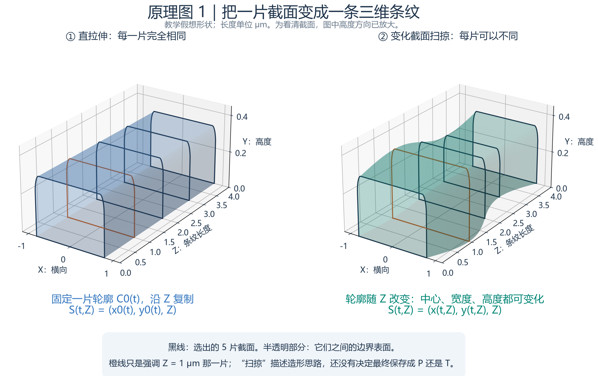
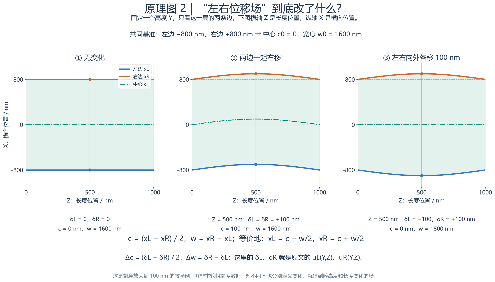
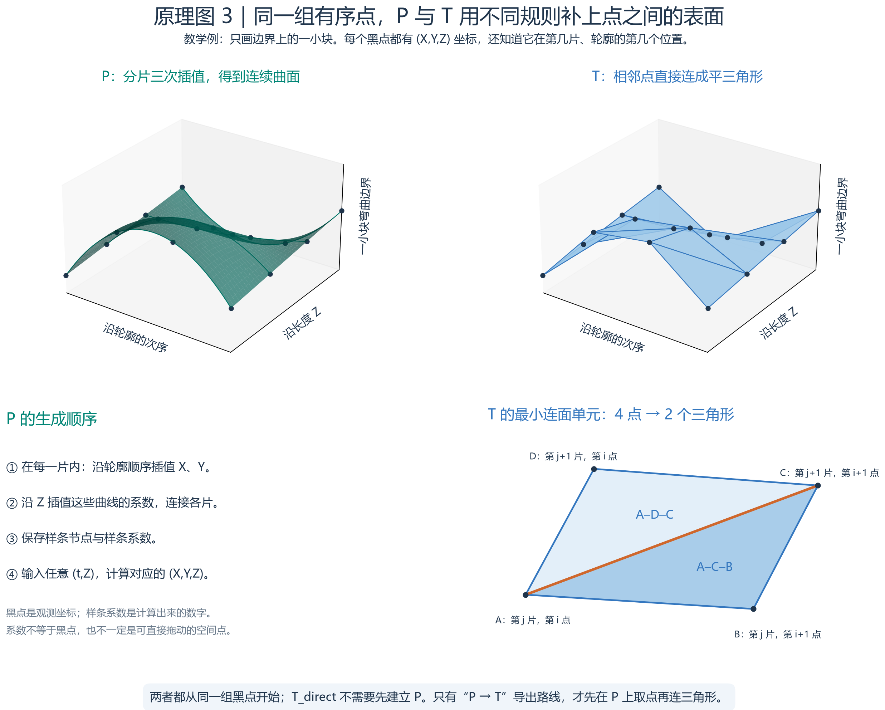
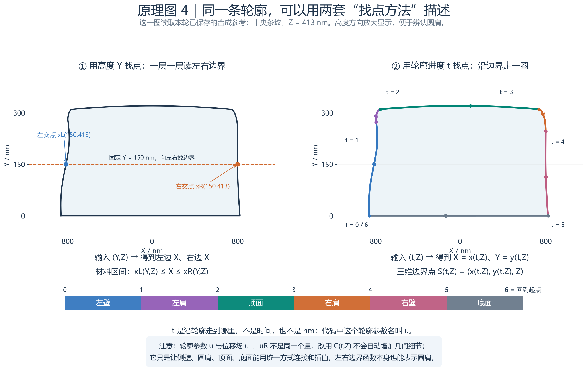

展开原理教程目录
P 和 T 怎样生成：从一个截面，到一个三维条纹
后续补充：从体素重新找轮廓并建立 P/T 的完整测试（GitHub 版）已完成。 它撤掉本篇原实验提供的有序点、分区和对应关系，检验怎样从材料格子获得轮廓，以及孔洞/合并带来的限制。
先把最容易混淆的地方分开：你引用的左右边界公式，说明“形状怎样随位置改变”；本轮的 P 和 T，说明“把这些形状信息按什么规则连接并保存”。它们可以放在同一条流程中理解。
这篇专门解释生成原理，不要求先读误差表。顺着第 1～8 节读一遍，再打开 可拖动的动手演示。这里的教学数字与本轮 AH53 结果分开标明；原来的结果和文件地址仍见 完整新手教程（GitHub 可读文字版）。
阅读目标：最后你应该能回答三个问题——一个截面怎样生成三维物体？同一批点怎样变成 P 或 T？为什么本轮写
C(t,Z)，与你引用的x_L(Y,Z)并不矛盾？
1. 先用一个位置，读懂左右边界公式
1.1 三个方向分别做什么
X 是横跨条纹的方向；Y 是离开底板的高度；Z 是沿着条纹走的方向。正文的数字示例使用 nm（纳米），图片以各轴标注为准；1 µm = 1000 nm。
先选定一个长度位置，例如 Z = 300 nm。沿这里切一刀，就得到一个 XY 截面。再选定这一刀中的一个高度，例如 Y = 150 nm，画一条水平线。
这条水平线从左往右穿过条纹时，会遇到两个边界点：
- 左边的 X 坐标叫
x_L(150,300)。 - 右边的 X 坐标叫
x_R(150,300)。 - 两个坐标之间是条纹材料；在这个有效截面上，外侧是空气。
例如左边 −800、右边 800，则 X = 0 在材料里面，X = 900 在外面；线宽为 800 − (−800) = 1600 nm。
x_L(Y,Z) 不是一个固定数字，而是一个查位置的规则：你给它高度 Y 与长度位置 Z，它返回那里的左边界 X。 x_R 同理。改变 Y 可以看到侧壁怎样倾斜和转弯；改变 Z 可以看到这条边沿长度方向怎样起伏。
1.2 你引用的公式，每一项是什么意思
xR(Y,Z) = xR,0(Y) + uR(Y,Z)
| 符号 | 白话意思 | 它回答的问题 |
|---|---|---|
x_L,0(Y)、x_R,0(Y) |
基准截面的左右边界 | 如果没有沿长度的变化，侧壁原本在哪里？ |
u_L(Y,Z)、u_R(Y,Z) |
相对基准的横向位移，单位 nm | 到这个高度、这个长度位置，边界向左或向右挪多少？ |
x_L(Y,Z)、x_R(Y,Z) |
最终边界位置 | 基准加上位移后，材料真正在哪里结束？ |
下标 0 表示“基准”，不是 X = 0，也不要求取 Z = 0 的实测截面。基准可以是设计图中的理想截面，也可以是选定的平均截面。位移可以为正、为负或为零。
假设在 Y = 150、Z = 300 的位置，基准左边 −800、基准右边 800；左边位移 +8，右边位移 +40。那么最终左边是 −792，右边是 840，宽度 1632，中心 24 nm。这里没有复杂算法，只是“原位置 + 改变量”。
这两个等式本身还没有规定 u 从哪里来，也没有规定文件里存什么。 u 可以由一条公式算出、由测量数据拟合、由一个位移数组插值，或由统计规则生成。这正是它能与本轮 P/T 联系起来的地方。
2. 截面怎样变成三维：拉伸、变化截面与扫掠
2.1 最简单的拉伸：每一刀都一样
先画一个完整截面：左壁、顶部、右壁和底部围成闭合区域。然后把它沿 Z 从起点移到终点，途中不改变宽度、高度或位置。
这样生成的物体，无论在哪个 Z 切开，都得到同一张截面。用公式表示，就是左右边界不随 Z 改变；如果把这个固定截面本身选作基准，就有 u_L = u_R = 0。若另选基准，位移也可以非零，但仍不依赖 Z。它可以有斜壁和圆角，只是这些特征沿长度保持不变。
2.2 截面随 Z 变化：每一刀可以不一样
现在让每张截面的位置、宽度、圆肩或高度随 Z 变化。例如第一个截面居中，中间截面向右挪一点，再往后又回来；或者中间比两头更宽。
把这一串变化的截面连续连接起来，就形成沿长度变化的三维条纹。“截面”不是说物体只有二维；它是组织三维形状的一种办法。 Z 告诉你用哪一张截面，截面告诉你该处横向和高度的材料范围。
这里可以把“扫掠”理解为截面沿路径移动并生成表面；本项目路径是直的 Z 轴，并允许截面变形，也常称变截面放样。它不是把几张互不相连的薄片堆在一起：薄片之间的区域也必须有明确的连接规则。

读图顺序： 先看截面相同的那一列，沿长度移动时每一刀都一样；再看变化截面的那一列，观察对应轮廓的位置或大小发生改变。图是教学几何，不是新增的一轮 AH53 测量。画出的有限截面帮助定位，整个模型仍要说明截面之间是什么形状。
2.3 “空间变化场”并不神秘
u_L(Y,Z) 在很多 Y、Z 位置都有值，所以称为一个空间变化场。可以把它想成一张表：一维列高度，一维列长度位置，表格里写“向 X 挪多少”。
但一张有限表只知道格点上的数；中间位置还需要插值规则。也可以直接用连续公式定义这个场，那么任意位置都能代入计算。
这张 Y×Z 的边界位移表不是 V 的 X×Y×Z 体素材料体。前者每处记边界移了多少，后者给空间中的每个小体积记材料编号。不要因为两者都能存成数组，就把它们当成同一种表示。
3. 中心移动和宽度改变，怎样进入这两个公式？
选定 Y 与 Z 后，把条纹中心叫 c，宽度叫 w，就有：
xR = c + w/2
反过来，只要知道两边界，也能算出：
w = xR − xL
如果基准中心是 c0、基准宽度是 w0，把变化量记成 Δc = c−c0、Δw = w−w0，那么：
uR = Δc + Δw/2
这就把“改变某段线中心”“改变某段线宽”翻译成了边界位移。三个例子都以基准左 −800、右 800 为起点：
| 编辑动作，教学示例 | 左位移 uL | 右位移 uR | 最终左 / 右 | 结果 |
|---|---|---|---|---|
| 整体向右 24 nm | +24 | +24 | −776 / 824 | 中心 +24，宽度仍 1600 |
| 宽度增加 32 nm，中心不动 | −16 | +16 | −816 / 816 | 两侧各向外 16 |
| 向右 24，同时加宽 32 | +8 | +40 | −792 / 840 | 中心 24，宽度 1632 |

读这张图时，分别观察“两边一起走”和“两边分开走”。 两边位移相同，中心改变而宽度不变；两边位移相反且大小相同，宽度改变而中心不变。更复杂的左右不对称可以把这两种变化组合起来。
为让图中变化容易看清，图 2 用了 100 nm 的左右位移：整体移动时中心变为 100 nm；两边各向外 100 nm 时宽度增加 200 nm。这与上表的 24/32 nm 是两组独立教学例，都不是实际粗糙度测量。
上面的 c 和 w 也可以依赖 Y 与 Z。比如让宽度随 Y 变化就能改变侧壁倾斜；让 Δc 只在某段 Z 有值就能只移动局部。想“只动中间、不动两头”，需要让位移在修改范围边缘逐渐回到零，而不是突然截断。
4. 同一套形状，为什么会有 P 和 T 两条生成路线？
需要先区分两个实际场景。
4.1 你已经知道完整公式：直接生成
假设你亲自规定了基准截面和全部变化函数，例如指定哪段加宽、哪段弯曲，并且任意 Y、Z 都能计算 x_L 与 x_R。
这时这套函数本身就可以作为一种参数化描述。保存函数的定义和参数，程序便能重新计算形状。若需要三角网格，就在指定位置取点、连接三角形；这属于 由参数化描述生成 T。
基准截面 + 空间变化函数
↓ 可计算任意位置的边界
连续的参数化形状
↓ 选位置取点，连接三角形
三角表面 T
这种工作流很适合设计界面：用户改“宽度增加多少”，程序先更新函数，再刷新显示网格。
4.2 你只有若干观测点：需要决定点间是什么
如果输入来自测量，通常只在有限位置知道边界。即使每个观测点都准确，点之间的形状仍不是唯一确定的。你要选择连接方法，也就是为没有观测的位置作出假设。
本轮实验为了公平比较 P 与 T，采用了这一思路：先构造独立参考答案，再从它取出有限的有序轮廓点，将同一批点分别交给 P 和 T_direct。P/T 构建时不再询问参考答案。
独立合成参考（实验的标准答案）
↓ 只抽取有限个截面和轮廓点
完全相同的有序观测点
↙ ↘
求三次样条系数 直接连接三角面
保存系数与结点 保存顶点与面连接
P T_direct
所以不能把本轮 T_direct 理解成“先生成 P，再把 P 变成三角形”。 那条转换路线也做了，但另叫 T_from_P，属于实验 B1。
4.3 为什么参考公式也像参数化，却不直接叫实验 P？
从广义上说，用公式定义的参考也是一种程序化、参数化形状。但本轮标签 P 特指“只从共同观测点建立并保存的分区样条模型”，不等于整个参数化方法家族。
参考生成器保存的是我们人为选定的形貌规律；候选 P 保存的是从观测求出的样条系数。两者来源、用途和数值表达都不同。直接把标准答案的公式交给 P，会跳过本轮想验证的“用有限数据保存形状”这个问题。
5. 本轮 P 怎样从一批点生成？
5.1 先给点排好位置，不能把散点随便连起来
每个截面都沿同一个方向绕轮廓一圈，依次经过左侧壁、左圆肩、顶面、右圆肩、右侧壁、底部。每张截面上的同一类位置相互对应，才能沿 Z 连接。
这里不是“任意点云输入就自动成功”的重建程序。分区、排序和不同截面之间的对应关系，本轮已经由取样过程提供。真实测量数据往往还要先做配准、排序、分区和异常点处理。
5.2 第一步：在每张截面内，用曲线连接观测点
先暂时固定 Z，例如只看 Z = 200 nm 这一刀。P 对每个轮廓分区，分别求能经过观测点的三次样条。
“三次”指小段函数包含最高三次的项，例如 a + bt + ct² + dt³；“样条”指按规则连接许多小段。这样一条曲线可以弯曲。系数由观测点和连接条件共同求出，而不是手工随便填进去。
这里要分清两种点：观测点是曲线需要经过的数据；控制系数或控制点是计算曲线的工具，通常不等于观测点，也不要求都落在曲线上。 本轮使用 SciPy 的三次插值样条构建器。对应函数定义
5.3 第二步：让这些截面曲线的系数沿 Z 变化
只有每张已知截面的曲线，还不能回答 Z = 300 nm 这种位于两张观测截面之间的位置。于是，再对第一步得到的各个曲线系数沿 Z 做三次样条插值。
也就是：截面内部有一层连续插值，截面之间还有一层连续插值。 两层合起来，得到一张可以在轮廓位置和长度位置上求值的连续曲面。
查询 Z = 300 时，先用 Z 方向样条算出“这一刀应使用的曲线系数”，再用这些系数计算这一刀里的轮廓。它不会回头去找参考答案。
5.4 最后保存什么？
本轮每个分区保存系数数组、轮廓方向的结点、Z 方向的结点，另保存单位、材料和有效范围。具体在 splines.npz 与 metadata.json 中。结点可以理解为“样条怎样分段的刻度”；它与观测位置有关，但含有数学上的重复和端点安排，不必与观测列表逐项相同。
下面这条公式可以跳过，作用只是说明“两个方向组合”怎样写成数学形式：
C 返回一对 (X,Y) 坐标；d_ab 是保存的二维坐标系数，B 和 N 是两个方向的样条基函数。每条条纹、每个分区各有自己的系数。基函数决定如何按当前位置组合系数，详细定义见 SciPy B 样条说明。
“连续”不等于“知道真相”。 P 只是根据选定的平滑连接规则推断未观测位置；如果真实边界有缺口或测量带噪声，这个假设仍需要验证。本轮六段分别插值，也不能自动宣称整个闭合轮廓处处具有完全相同的光滑连接条件。
6. 本轮 T 怎样从同一批点生成？
6.1 把每个观测点放回三维空间
截面点原来是 (X,Y)，加上它所在截面的 Z，就成为三维顶点 (X,Y,Z)。所有截面都这样处理，就得到一圈圈三维点。
只保存这些点还不够，因为一堆点没有说明哪些地方有表面。下一步必须写出连接关系。
6.2 取相邻两张截面、相邻两个轮廓位置
假设前一张截面位于 Z = 200，后一张位于 Z = 400。在前一张上取沿轮廓相邻的两个点 A、B；在后一张上找到对应的 D、C。
后一张截面： D ───────── C
│ ╱ │
│ ╱ │
│ ╱ │
│ ╱ │
前一张截面： A ───────── B
沿 A—C 画对角线，得到三角形 A-D-C 和 A-C-B。
这是连接示意；实际四点放在三维空间中，未必共面。
四个点在三维里可能像一片扭曲的纸，不能随便把它们当成一个平面。分成两个三角形后，每三个非共线点都明确确定一片平面。对角线怎么选也是模型的一部分，可能影响中间表面。
本项目使用的连接正是 A-D-C 与 A-C-B。继续沿轮廓做一圈，再沿 Z 处理每对相邻截面，就形成整个侧面、圆肩、顶面和底面的三角外壳。

读图顺序： 先找两条路线共同拥有的观测点，再看 P 怎样用曲线和变化系数连接它们；接着只盯住 T 的四个顶点，找到对角线与两个三角形。不要把图中用于显示 P 的线网误认为 P 的磁盘文件也保存了同一套三角连接。
6.3 三角形内部的点怎样确定？
对一片三角形，内部点是三个顶点的加权平均。例如对 A、D、C：
这就是一片平面，不会在三个顶点之间自动鼓起一个弯曲面。增加三角形数量可以让很多小平片更接近弯曲形状，但每一片仍是平的。
三角表面通常用“顶点表 + 面的顶点索引”存储，这种点与连接分开的组织方式也见于 CGAL 表面网格文档。本项目没有调用 CGAL，实际连接代码在 common.py。
6.4 截面、封口与文件
要查 Z = 300 的 XY 截面，程序拿这张平面与保存的三角形求交，得到一条条线段。切线可能穿过 A-C 对角线，所以截面折线中会出现额外的交点；不能一般地把整个 T 查询简化成“左右两个点平均一下”。
沿轮廓的底部也参与连面，再给 Z 起止位置补上端盖，才得到闭合条纹。Z 端盖是计算窗口的人为封口，本轮自由表面误差不评价这些端盖。材料编号和表面方向也要记录，不能只有一层无内外说明的线框。
最终 vertices.npy 存所有顶点，faces.npy 存“哪三个顶点组成一片三角形”；u.npy、z.npy 和 metadata.json 保存结构索引及配套说明。本轮 T_direct 的顶点来自原观测，不读取 P 的样条系数。
7. 为什么本轮 P 写 C(t,Z)，而你引用的是 xL(Y,Z)？
7.1 两种方式都能指到同一条边界
你的写法像拿一把水平尺：指定高度 Y 与长度位置 Z，去找左、右边界的 X。
本轮写法像沿着边界走路：指定“沿轮廓走到哪里”t 与长度位置 Z，返回那个边界点的 X 和 Y。
三维表面点 S(t,Z) = (X(t,Z), Y(t,Z), Z)
这里 t 是无量纲的轮廓位置标记，不是时间，也不是纳米位移。本项目代码把它叫 u，但你引用的 u_L/u_R 是有长度单位的位移场。它们只是碰巧用了同一个字母，含义不同。本文特意改叫 t，避免混淆。
| 本文 t 范围 | 绕轮廓走到哪里 | 本轮文件中的分区 |
|---|---|---|
| 0 → 1 | 沿左侧壁往上 | c0 / u0 / z0 |
| 1 → 2 | 绕过左圆肩 | c1 / u1 / z1 |
| 2 → 3 | 沿顶部从左到右 | c2 / u2 / z2 |
| 3 → 4 | 绕过右圆肩 | c3 / u3 / z3 |
| 4 → 5 | 沿右侧壁往下 | c4 / u4 / z4 |
| 5 → 6 | 沿底部返回左侧起点 | c5 / u5 / z5 |
t = 0 与 6 对应同一闭合位置。每一段各占一个参数单位，不代表各段物理长度相同；沿 t 走相同一步，也不保证走过相同纳米长度。

左侧按高度找交点，右侧沿轮廓找位置。 图中若采用本轮参考曲线，那也是保存的合成参考，不是实测照片。先找到两个方法指向的同一边界点，再看它们使用的输入坐标为何不同。
7.2 怎样从 C(t,Z) 得到你熟悉的左右边界？
固定 Z 和目标高度 Y*，在轮廓上寻找满足 Y(t,Z)=Y* 的位置。左侧那个交点的 X 就是 x_L(Y*,Z)，右侧那个交点的 X 就是 x_R(Y*,Z)。
找到两边以后，如果还想知道相对基准偏了多少，再做减法：
uR(Y,Z) = xR(Y,Z) − xR,0(Y)
所以本轮保存 C(t,Z)，依然能够回答你那套左右边界公式提出的问题。本轮并没有把两张 u_L/u_R 位移数组直接保存进 P 文件；保存的是整圈轮廓曲面的样条系数。
7.3 为什么做这个选择？圆顶附近用高度作坐标不太方便
在一个平滑圆顶的最高点附近，Y 很接近最高高度时，左右边界会迅速汇合。此处以 Y 为自变量写 X(Y)，导数可能变得很大；均匀按高度取样会使数值处理不方便。
沿轮廓走则可以让位置顺着顶面转过去，因此本轮选择了 C(t,Z) 的组织方式。这是数值实现的选择，不是说 x_L/x_R 表达不了圆肩或圆顶。 用适当分区、非均匀采样或其他数值方法，左右边界表达也能处理许多这样的形状。
7.4 你引用的“每个高度只有一个连续材料区间”限制仍然重要
如果水平线只穿过一段材料，那么两个交点就能表示材料范围。倒扣可能只是上面比下面更宽，仍然可以满足这个条件。
如果水平线依次穿过“材料、空气、材料”，就需要至少两对边界。只取最左和最右，会把中间空气错误填成材料。孔洞、分叉或连接关系变化可能需要多个轮廓、多区间或更一般的表面结构。
本轮 C(t,Z) 本身是一种轮廓写法，但材料查询仍采用“每条条纹、每个有效 Y/Z 对应一个 X 区间”的实现，而且条纹数量和六分区固定。当前 T 的部分查询也共享这个限制。换一种记号不会自动获得处理孔洞或合并的能力。
此外，两条边界函数还需要有效高度范围、有效 Z 范围、顶底和端部的闭合规则、材料与单位。给出左右两式，不等于已经完整定义了所有三维模型信息。
8. 用一组可以手算的数字，看 P 和 T 到底在哪里不同
8.1 先规定一个很小的教学形状
这里只看 Y = 150 nm 高度处的两条边缘，Z 从 0 到 600 nm，基准宽度为 1600 nm。这不是本轮 16×4 µm 或 48×48 µm 的结果。
设 q = Z/600，再设一个两头为 0、中间为 1 的平滑变化 s = 4q(1−q)。让中心 c = 24s，宽度 w = 1600 + 32s，仍用 L=c−w/2、R=c+w/2 得到边界。
由此可得 u_L = 8s、u_R = 40s。这就是你引用的“基准 + 位移场”的一个最简单实例；此处固定了 Y，所以只展示 Z 方向变化。
8.2 只交给两种方法四个观测位置
| Z / nm | 中心 c / nm | 宽度 w / nm | 左边 L / nm | 右边 R / nm |
|---|---|---|---|---|
| 0 | 0 | 1600 | −800 | 800 |
| 200 | 21.333 | 1628.444 | −792.889 | 835.556 |
| 400 | 21.333 | 1628.444 | −792.889 | 835.556 |
| 600 | 0 | 1600 | −800 | 800 |
现在把生成公式暂时藏起来，只保留四个位置的数字。两种方法在这四处都可以经过同样的点，但在没有观测的 Z = 300 处会怎样？
8.3 T 的这条顶点轨迹：连接相邻位置
在这个简化例子中，我们跟踪的是同一个高度的一条对应顶点轨迹。Z = 300 正好位于 200 与 400 中间，因此分段直线会取两端的中间值。由于两个端点恰好相等，中间仍为：
L_T(300) = −792.889 nm
R_T(300) = 835.556 nm
中心 ≈ 21.333 nm，宽度 ≈ 1628.444 nm
这是 T 中沿这条网格边的线性连接。真实三角表面上的任意 Y 查询还需要与三角面求交，不能把本例的平均公式当成整个程序的完整算法。
8.4 P 的这条轨迹：用四个位置求一条三次插值曲线
对每一侧，用四个观测值求经过它们的三次多项式。这相当于一个没有内部结点的三次样条教学特例。因为本例数据来自二次函数，三次项求出来为零，插值恰好恢复这个二次变化：
L_P(300) = −792 nm
R_P(300) = 840 nm
中心 = 24 nm，宽度 = 1632 nm
两种方法知道的四个观测值完全一样；差别出在它们给观测之间安排了什么形状。 P 的这条曲线在中间继续弯出去，T 的这条边保持直线。
这里 P 恰好恢复教学公式，是因为公式与插值函数相匹配。换一条真实轨迹，四个点之间也可能有别的变化；仅凭这四个点不能证明哪种连接一定是真实的。
8.5 动手拖动，更容易理解
打开离线互动演示：切换直拉伸、中心移动、宽度变化，并拖动 Z
- 先选“直拉伸”，沿 Z 拖动，观察边界不变。
- 选“只中心变化”，看两边一起移动；选“只宽度变化”，看两边向相反方向移动。
- 选“中心 + 宽度”，跳到观测位置 Z = 200，P 和 T 的位置相同。
- 再跳到中间 Z = 300，查看两者如何给出不同答案；展开观测表，确认输入仍是同一批点。
这个演示只使用四个 Z 点，便于手算；实际程序在局部细档用了 101 个 Z 截面，并在轮廓方向也进行了处理。演示不是完整 AH53 建模器，不能拿它的数字替代实验误差。
在 GitHub 上可以直接阅读本页静态图文；互动页需要下载项目后用浏览器打开，或通过本机查看器服务访问。它无外部库，不需要联网。
9. 把原理与本轮的实际文件对上
下面对应的是已经完成的 20261024_v2，没有因为新增这篇图解而重建或修改正式模型。
| 阶段 | 实际程序与数据 | 正在做的事 |
|---|---|---|
| 定义合成参考 | src/ah53/reference_geometry.py |
用侧壁函数、圆肩、顶面和沿 Z 的变化定义标准答案 |
| 抽取共同观测 | src/ah53/common.py 的 build_observations；models/local_observations_fine |
在固定位置取有序轮廓点，P/T 都读这份输入 |
| 建 P | src/ah53/parametric.py；models/local_P_fine |
分区内先沿轮廓插值，再沿 Z 插值，保存系数 |
| 建 T_direct | src/ah53/surface.py 与 common.py 的 loft_mesh；models/local_T_direct_fine |
观测点成为顶点，写入三角连接和封口 |
| P 转 T | surface.py 的 from_model；models/local_T_from_P |
从已保存 P 重新取点再连面，属于另一条来源路线 |
| 查看与测量 | serve_viewer.py 与 src/ah53/evaluate.py |
从保存的模型求截面、查询材料、画图或计算偏差 |
局部细档有三条纹，Z 从 −2000 到 2000 nm，每 40 nm 一张，共 101 张。每条闭合观测轮廓记录 430 个点，其中最后一个点与第一个重合；T 建网格时去掉这个重复终点，每圈保留 429 个顶点。实际文件中的数组可以核对这些数。
P 的六段分别插值。参考的圆肩是三次 Bézier，顶部是二次曲线，底部是直线；侧壁含正弦项，沿 Z 还含多种波动。所以应当说“这类平滑、有序、部分低阶多项式的参考有利于三次插值”，不能说 P 复制了参考的同一套公式。
参考接头设计为切线方向对齐，也就是视觉上的光顺转弯；不同分区参数速度可能不同。严格数学里的“同一参数下一阶导数相等”比方向对齐更强，本篇不把两者混称。P 六段独立插值也没有额外强制所有接头的一阶导数相等。
10. 把你引用的段落逐项对应回来
| 你引用的说法 | 在生成流程中的位置 | 与本轮 P / T 的关系 |
|---|---|---|
| 画一个截面再拉伸 | 最简单的几何定义 | P 和 T 都能保存；它沿 Z 不变 |
| 截面随位置变化 | 更一般的几何定义 | 两者也都能保存变化截面，连接规则不同 |
| 基准侧壁、圆角、上下 CD | 决定基准截面怎么画 | 决定观测点或函数的位置，不限定必须存成 P 或 T |
| uL/uR 空间变化场 | 决定边界相对基准怎么挪 | 可先定义连续函数再导出 T；也可由有限数据建立 P |
| 样条 | 一种构造连续变化的工具 | 本轮 P 正是分区、双方向的三次样条 |
| 局部位移数组 | 在有限位置记录变化量 | 还要指定格点间怎样插值；不是完整三维体素体 |
| 三角面 | 一种明确的分片平面表面 | 本轮 T_direct 由共同观测直接连面，T_from_P 由 P 再采样连面 |
| 适合改角度、CD、中心 | 用户希望使用的编辑语义 | 需要把动作转换成函数、系数或顶点的改变，并检查有效性 |
| 内部材料不重复存几亿次 | 只记录边界的优势 | P 与 T 都主要存边界；这项优势不是 P 独有 |
| 单个连续材料区间的限制 | 材料查询模型的前提 | 当前 P/T 查询都受此实现限制，一般模型可以扩展 |
需要特别补充：“适合做编辑界面”不等于本轮已做完这些编辑按钮。 本轮展示了局部圆肩修改；侧壁角、任意高度 CD、顶面凹陷等完整交互编辑仍需要单独设计。P 的原始样条系数也不会自动等于一个工艺参数。
11. 你可以用这五句话检查自己是否理解
- 一个截面给出某个 Z 位置的材料轮廓；让它随 Z 变化，就能组织三维形状。
x_L,0 + u_L是“基准位置 + 横向位移”，并没有单独规定最终文件格式。- 本轮 P 从有序观测求连续样条，保存系数；本轮 T_direct 从同样观测连三角面，保存顶点与连接。
- P 与 T 可以经过同样的观测点，但在点与点之间采用不同规则，所以生成的表面不同。
C(t,Z)与x_L(Y,Z)/x_R(Y,Z)是两种查边界的坐标方式；满足单区间等前提时，可以由前者求出后者。
如果你现在能指着图中的 A、B、C、D 说明两个三角形怎样产生，并能解释 Z = 300 没有观测时 P/T 各自怎样算出位置，就已经理解了这次比较最核心的生成原理。